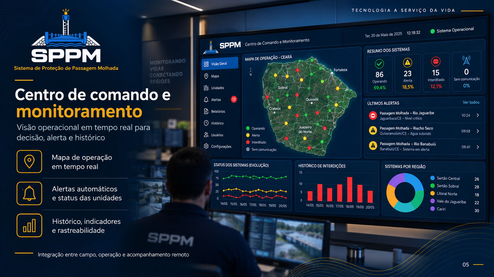

Sensoriamento de nível e vazão
Leitura industrial calibrada para água turva e com detritos, com autoverificação periódica contra falha de sensor.
A SPPM instala unidades autônomas que medem o nível da água em passagens molhadas e bloqueiam fisicamente a pista quando a travessia deixa de ser segura — sem rede elétrica, sem sinal e sem depender de alguém no local.
Desenvolvido em ambiente acadêmico e testado em campo no Ceará.
 UFCUniversidade Federal do Ceará
UFCUniversidade Federal do Ceará
 PartecParque Tecnológico
Defesa CivilOperação municipal
PartecParque Tecnológico
Defesa CivilOperação municipal
Passagens molhadas ligam comunidades inteiras a hospitais, escolas e ao comércio em centenas de municípios do Nordeste. O risco aparece exatamente quando elas são mais usadas: na chuva forte, o nível sobe em minutos, a água encobre a pista e o motorista atravessa porque nada no local indica que a passagem mudou de estado.
Boletins meteorológicos, placas e grupos de mensagem informam. Nenhum deles fecha a via. Entre saber do risco e impedir a travessia existe uma lacuna operacional — e é ela que a SPPM foi construída para fechar.
A diferença entre um aviso e uma barreira é medida em segundos.
Em cabeças-d'água, o nível crítico pode ser atingido antes que qualquer deslocamento até o ponto seja possível.
Sem medição remota, a Defesa Civil depende de ligações e relatos para saber se a passagem está transitável.
Tempestades derrubam a rede elétrica justamente quando a sinalização precisaria estar funcionando.
Sem dados de interdições anteriores, a prioridade de obras e o dimensionamento de rotas ficam baseados em memória.
Cada unidade mede, decide e atua no próprio ponto. A conexão com a central serve para informar e registrar — não para autorizar o bloqueio.
Sensores de nível e vazão calibrados para água turva e com detritos fazem leituras a cada poucos segundos. Um modelo embarcado acompanha a curva de subida, e não apenas o valor absoluto — o que permite acionar antes do limiar quando a água sobe rápido demais.
Ao atingir a condição crítica, cancelas e sinalização luminosa são acionadas em menos de 30 segundos. O aviso deixa de ser informativo e passa a ser uma barreira, dos dois lados da travessia.
Geração solar com banco de baterias mantém o ciclo completo funcionando por dias sem sol direto. A comunicação com a central usa rota alternativa quando o enlace principal cai, e a unidade continua decidindo localmente mesmo offline.
Cada componente foi escolhido pensando em instalação remota: sol intenso, chuva de longa duração, poeira, detritos e conectividade instável.
Leitura industrial calibrada para água turva e com detritos, com autoverificação periódica contra falha de sensor.
Painel fotovoltaico e banco de baterias dimensionados para manter o ciclo completo por dias nublados seguidos.
Envio de eventos por rota principal e alternativa; sem enlace, a unidade grava localmente e sincroniza depois.
Cancelas e sinalização luminosa dimensionadas para vento e chuva intensos, com acionamento manual de emergência.
O modelo lê a velocidade de subida além do nível, o que reduz acionamentos tardios e alarmes desnecessários.
Estrutura adaptável à geometria de cada passagem, instalada sem obra civil de grande porte.
Parâmetros de limiar, altura de instalação e tipo de atuador são definidos ponto a ponto, a partir do levantamento hidrológico da travessia.
A equipe da Defesa Civil acompanha o estado de cada travessia sem sair da sala e recebe o alerta antes do bloqueio acontecer.
Cada unidade aparece como normal, atenção ou bloqueio ativo, com o nível medido no momento.
A notificação de subida acelerada chega enquanto ainda há tempo de acionar equipes e desviar o tráfego.
Data, duração e nível registrado de cada acionamento, exportável para relatórios e prestação de contas.
Bateria, enlace e data da última manutenção de cada unidade, com aviso quando algo sai do padrão.

18 unidades transmitindo agoraCada implantação começa por um único ponto crítico e só escala depois de uma temporada de chuva validada em campo.
Visita técnica, histórico de alagamentos e definição dos limiares junto à Defesa Civil do município.
Montagem da estrutura, sensores, geração solar e cancelas, sem interrupção prolongada da via.
Ajuste dos limiares com dados reais do ponto e capacitação da equipe que vai operar a central.
Acompanhamento durante o período chuvoso, relatório de interdições e planejamento dos próximos pontos.
Não encontrou o que precisava? A equipe responde questões técnicas específicas do seu ponto.
Sim. A decisão de bloquear a travessia é tomada na própria unidade, com energia solar e bateria de reserva. A conexão serve para enviar alertas e registrar eventos; se ela cair, os dados ficam gravados localmente e sincronizam quando o enlace voltar.
A liberação automática só ocorre depois que o nível permanece abaixo do limiar seguro por um intervalo definido no projeto. A central também permite liberação manual autorizada, e toda unidade tem acionamento mecânico de emergência no local.
O bloqueio é precedido por sinalização luminosa e sonora, e as cancelas fecham os acessos, não a travessia em si — quem já está na pista mantém a saída livre. As distâncias são definidas no levantamento de cada ponto.
O contrato prevê manutenção preventiva periódica e atendimento corretivo. A central sinaliza queda de bateria, falha de enlace ou leitura fora do padrão, o que permite agir antes da próxima chuva forte.
O caminho usual é um projeto-piloto em um ponto crítico, com escopo fechado de levantamento, instalação, calibração e acompanhamento de uma temporada. A equipe apoia a montagem do termo de referência.
Conversamos com equipes técnicas de Defesa Civil, secretarias de infraestrutura e parceiros industriais interessados em escalar a rede. A primeira conversa é técnica: levantamos o ponto, o histórico de alagamento e o escopo possível de piloto.